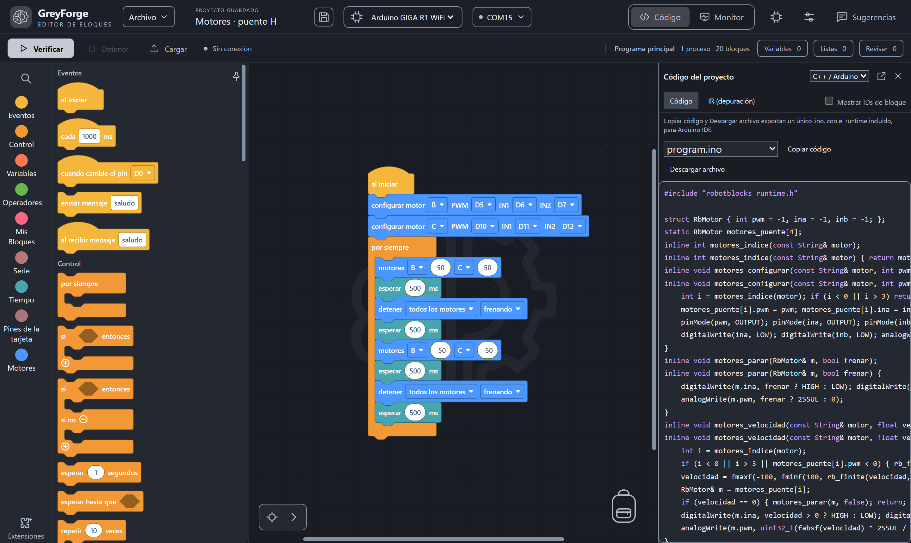

Programa tu robot con bloques.
GreyForge es el editor de bloques del equipo. Armas el programa, eliges tu tarjeta y lo cargas al robot. Si quieres ver qué hay detrás, el código en C++ o Python aparece al lado mientras programas.
Descargar para WindowsWindows 10 y 11 · 64 bits · gratis

Qué puedes hacer
Todo lo que necesitas para la clase y la competencia, en un solo programa.
Programar con bloques
Eventos, control, variables, listas y tus propios bloques. Sin errores de punto y coma.
Ver el código real
El panel «Código» muestra el C++ de Arduino o el Python que genera cada bloque.
Cargar a la tarjeta
«Verificar» compila y «Cargar» lo manda a la tarjeta. Para Arduino no hace falta instalar Arduino IDE.
Sensores y motores
Extensiones para motores con puente H, servos, seguidor de línea QTR, ultrasónico, color, IMU y más.
Tarjetas compatibles
Eliges la tarjeta en la parte de arriba del editor y los bloques se ajustan a sus pines.
Cómo instalar
Toma un par de minutos y no pide contraseña de administrador.
-
Descarga el instalador Da clic en Descargar para Windows. Se guarda
GreyForge-Windows.exeen tu carpeta de Descargas. -
Ábrelo Dale doble clic al archivo descargado.
-
Si Windows dice «Windows protegió tu PC» Da clic en Más información y luego en Ejecutar de todas formas.
-
Sigue los pasos Al terminar se abre GreyForge y queda un acceso directo en el escritorio.
¿Por qué sale ese aviso? Windows lo muestra con los programas que no tienen un certificado de pago, como los proyectos escolares. GreyForge es del equipo y es seguro; cada actualización va firmada y la app la comprueba antes de instalarla.
Conectar LEGO SPIKE y EV3
GreyForge los programa con Pybricks, en Python. Las dos tarjetas son experimentales: si algo no te funciona, cuéntanos con el botón Sugerencias de la app.
Antes de empezar, pregúntale a tu profe. Preparar un SPIKE cambia su firmware, y preparar una microSD para el EV3 borra todo lo que tenga. Se hace una sola vez y después puedes volver al programa de LEGO.
LEGO SPIKE Prime
Se conecta sin cable, por Bluetooth. Ten a la mano el cable USB para instalar Pybricks.
Una sola vez: instalar Pybricks en el hub
-
Abre Pybricks CodeEn Chrome o Edge, entra a code.pybricks.com.
-
Instala el firmwareEn el menú de herramientas elige Install Pybricks Firmware y escoge Prime Hub.
-
Sigue los pasos de la pantallaLa página te enseña con un video cómo poner el hub en modo de actualización. No lo desconectes hasta que termine la barra.
Cada vez que programes
-
Enciende el hub y el Bluetooth de la computadoraNo lo emparejes en la configuración de Windows: se conecta desde GreyForge. Si tienes abierto Pybricks Code, ciérralo.
-
Elige la tarjetaArriba en GreyForge abre Más tarjetas… y agrega SPIKE Prime / Pybricks.
-
ConectaAbre el menú Conectar hub, elige Conectar hub y escoge tu hub en la lista.
-
Carga tu programaArma tus bloques y da clic en Cargar. El programa arranca en cuanto termina; para pararlo usa Detener.
Si el SPIKE no conecta
- No aparece en la lista: revisa que esté encendido, que tenga Pybricks y que no esté conectado a otra computadora o a Pybricks Code.
- Lo emparejaste en Windows: quítalo en Configuración → Bluetooth y dispositivos, y conéctalo desde GreyForge.
- «Firmware/perfil no soportado»: vuelve a instalar Pybricks desde code.pybricks.com; hace falta la versión 3.6.1 o una más nueva.
- Volver al programa de LEGO: en code.pybricks.com, menú de herramientas, elige Restore official LEGO firmware.
LEGO EV3
Usa una microSD con EV3 MicroPython y un cable mini-USB. GreyForge crea el archivo main.py y
tú lo copias al ladrillo.
Una sola vez: preparar la microSD
-
Consigue una microSDDe 4 a 32 GB. Todo lo que tenga se va a borrar.
-
Descarga la imagenBaja «EV3 MicroPython microSD card image» de la guía de Pybricks. No la descomprimas.
-
GrábalaUsa un programa como Etcher: elige la imagen, elige la microSD y no la saques hasta que termine.
-
Enciende el EV3 con la tarjetaMétela con el EV3 apagado y enciéndelo. La luz naranja parpadea mientras arranca (puede tardar varios minutos) y se pone verde cuando está listo.
Cada vez que programes
-
Elige la tarjeta y arma tus bloquesArriba en GreyForge abre Más tarjetas… y agrega EV3 / microSD Pybricks 2.0.
-
Descarga tu programaAbre el panel Código y da clic en Descargar archivo. Si ya tenías un
main.pyen Descargas, bórralo antes para que el nuevo no se llamemain (1).py. -
Conecta el EV3Con el EV3 encendido, conecta el cable mini-USB y espera unos segundos a que Windows lo reconozca.
-
Copia el archivoAbre PowerShell desde el menú Inicio, pega esta línea y pulsa Enter. La primera vez escribe
yes; después escribe la contraseñamaker(no se ve mientras escribes).scp "$HOME\Downloads\main.py" robot@ev3dev.local:/home/robot/main.py -
Dale permiso de ejecutarsePega esta otra línea y escribe otra vez la contraseña.
ssh robot@ev3dev.local "chmod +x /home/robot/main.py" -
Ejecútalo en el EV3En la pantalla del ladrillo entra a File Browser, busca
main.pyy pulsa el botón central. Con el botón Atrás se detiene.
Si el EV3 no conecta
-
No encuentra «ev3dev.local»: espera a que la luz esté verde y revisa el cable. Si
sigue igual, cambia
ev3dev.localpor la IP que sale arriba en la pantalla del EV3. - «scp» o «ssh» no se reconoce: en Windows ve a Configuración → Características opcionales e instala «Cliente OpenSSH».
-
«REMOTE HOST IDENTIFICATION HAS CHANGED»: cambiaste de EV3 o de microSD. Ejecuta
ssh-keygen -R ev3dev.localy vuelve a copiar. -
¿Prefieres Visual Studio Code? Instala la extensión «EV3 MicroPython», crea un
proyecto y cambia su
main.pypor el tuyo. Con F5 se copia y se ejecuta. - Volver al programa de LEGO (EV3-G): apaga el EV3, espera a que se apaguen la pantalla y la luz, saca la microSD y enciéndelo.
Se actualiza solo
Solo descargas el instalador una vez. Cuando sale una versión nueva, GreyForge te avisa al abrirlo.
«Hay una actualización»
El aviso muestra qué cambió. Puedes instalarla en ese momento o elegir «Más tarde».
Tu trabajo primero
Si tienes cambios sin guardar, el botón dice «Guardar e instalar» y primero guarda tu proyecto.
Se reinicia solo
Descarga la versión nueva, la instala y vuelve a abrir GreyForge. Tus proyectos no se tocan.
¿Tenías la versión 0.6.0 o anterior? Esas no tienen el actualizador: instala esta versión una vez con el botón de arriba. De ahí en adelante se actualiza solo.
Novedades
Todas las versionesCargando las novedades…